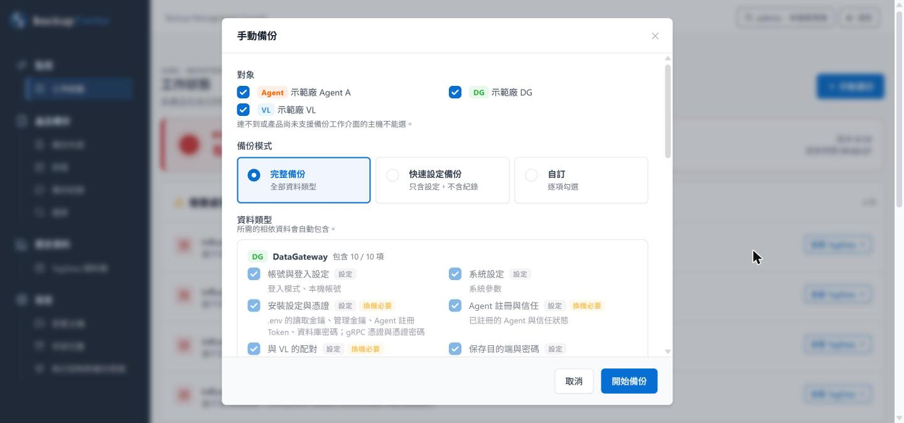
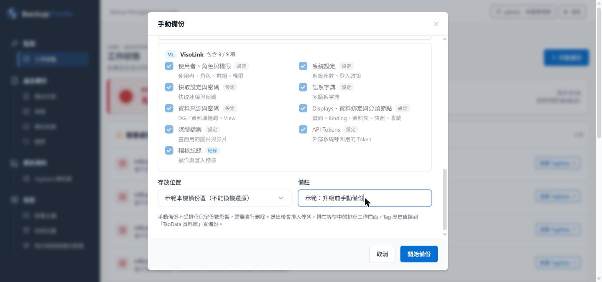
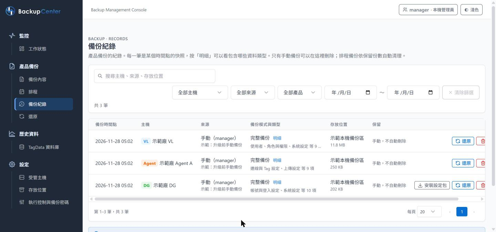

手動備份
立即對一台或多台主機做一次備份。備份是「這個時間點的快照」，檔案直接寫到選的存放位置，並用備份密碼加密。
建立手動備份


- 在「工作狀態」按右上角「手動備份」（或在「受管主機」該列按「手動備份」，對象會先勾好）。
- 在「對象」勾選要備份的主機；連不到或產品尚未支援備份工作介面的主機不能選。
- 在「備份模式」選「完整備份」「快速設定備份」或「自訂」；自訂時在「資料類型」逐項勾選，相依類型會自動包含。
- 在「存放位置」選要寫入的位置；需要時在「備註」寫用途（最多 200 字）。
- 按「開始備份」。
視窗關閉，右下角顯示「已排入佇列：示範廠 VL（第 3 位）、示範廠 DG（第 1 位）…」；在工作狀態的「排隊中」或「執行中」看到這些工作。
手動備份不受排程保留份數影響，不會自動刪除，需要時到「備份紀錄」自行刪除（第 6 章）。
失敗時先查
- 「開始備份」後出現錯誤：尚未設定備份密碼、沒有選對象或存放位置。
- 對象不能勾：到「受管主機」看該主機的連線狀態（第 9 章）。
- Tag 歷史值不在這裡：請到「TagData 資料庫」備份（第 8 章）。
追蹤備份進度

- 按下「開始備份」後右下角出現「已排入佇列：…」，列出每台主機的排隊順位。
- 在「排隊中」看排隊原因，例如「等待：同一台實體主機 示範主機 01 有工作執行中」；手動備份預設排在等待中的排程工作前面。
- 開始執行後在「執行中」看進度百分比與步驟。
- 完成後在「最近結果」看到成功、大小與耗時。
「最近結果」出現這次備份，結果為「成功」。
失敗時先查
- 一直排隊：同一台實體主機上的 VL、DG、Agent 依序執行；或已達全系統同時執行上限。
- 失敗並顯示逾時：到第 11 章調整「逾時」，或確認存放位置的寫入速度。
確認備份已寫入存放位置

- 到「備份紀錄」，來源顯示「手動」的就是這次備份。
- 按「明細」核對主機、時間點、版本、備份模式與包含的資料類型。
- 回到「受管主機」，該主機的「最後成功備份」更新為這個時間。
紀錄與明細正確，之後可以用這份備份還原（第 7 章）。
失敗時先查
- 明細提示「不能直接用來換機還原」：這份備份缺少換機必要的類型，只能原機還原。